The Mystery of the Antikythera Mechanism
Antikythera MechanismAntikytheraAntikythera Mechanism Calendar RingAntikythera Mechanism 354 HolesAntikythera Mechanism Lunar CalendarAntikythera Shipwreck
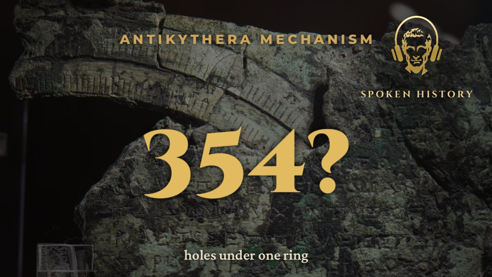
Under a two thousand year old bronze ring lie tiny holes, and scholars have argued over how many there were, and what they meant. The ring belongs to the Antikythera mechanism, a box of bronze gears pulled from a shipwreck off a small Greek island. Turn its knob, and pointers showed the Sun, the Moon, coming eclipses, and the years of the Olympic Games. The University of Glasgow calls it the oldest known analogue computer. A peg through the turning calendar ring into one of those holes is thought to have held it in place. 365 holes would fit the Egyptian year of 365 days. 354 would fit a year of twelve moons. In 2024, two physicists in Glasgow borrowed the maths built for gravitational waves, and got 354 or 355. Tony Freeth, an engineer on the team behind its scans of 2005, called their conclusion “just wrong”.
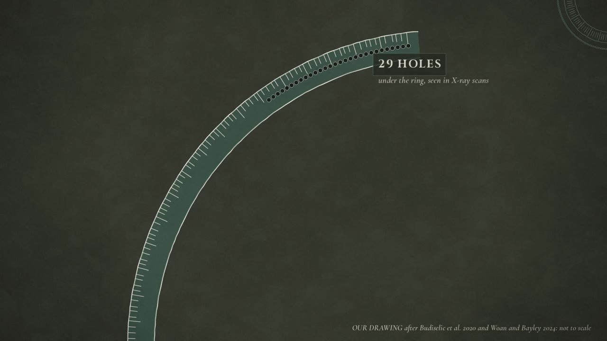
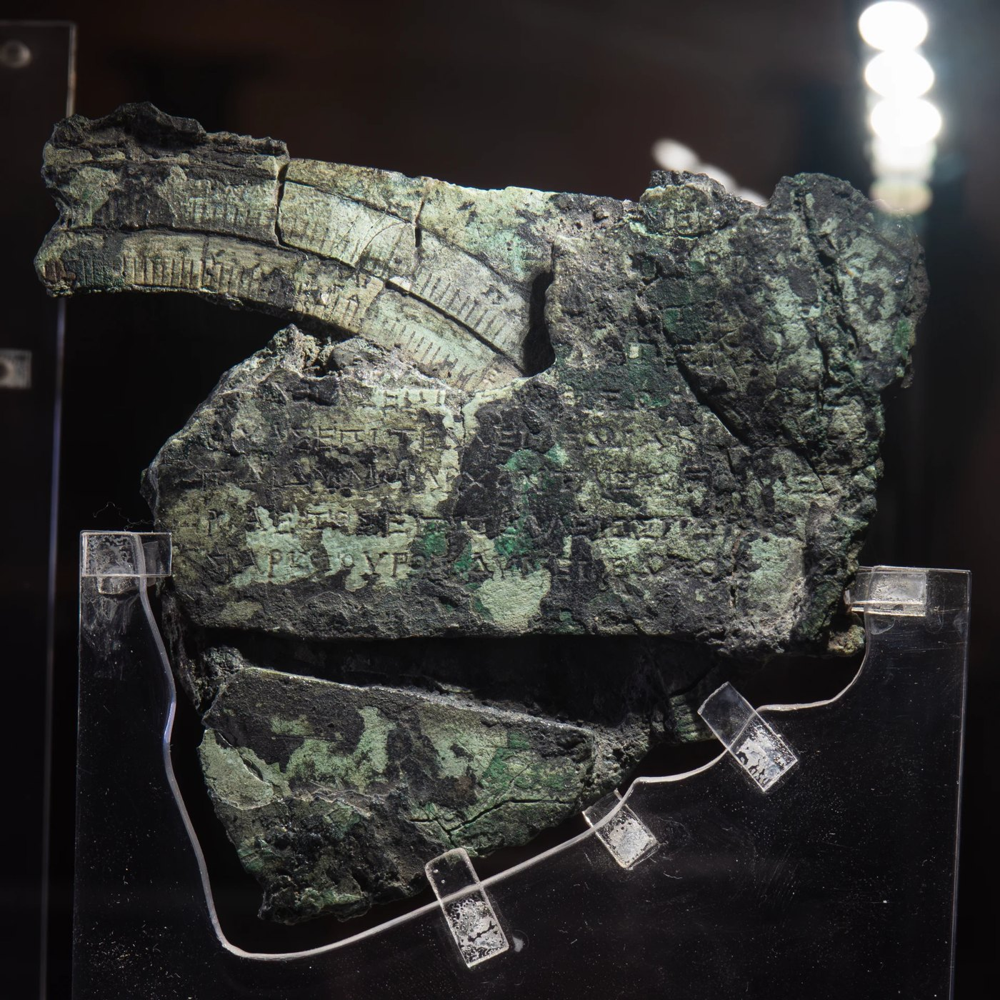
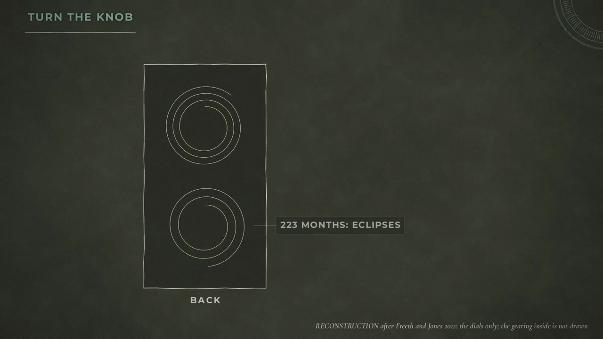
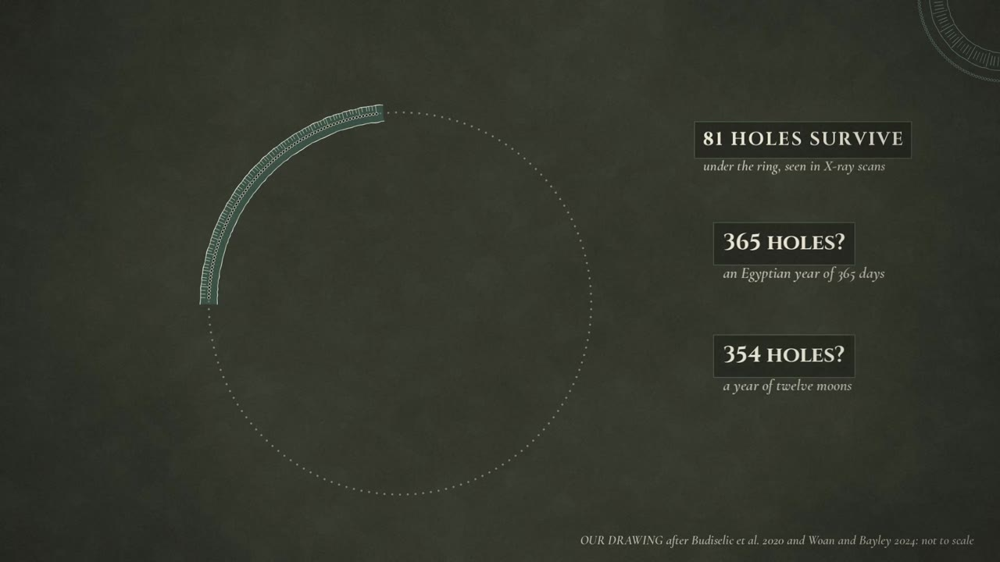
So what did this machine really do, who made it, and how did a few holes start a quarrel? A storm, a former minister and a dialogue by Cicero will take us there.
Sponge divers find the wreck, 1900
It all begins with a storm, shortly before Easter in 1900. Sponge divers from the island of Symi, sailing home from the coast of North Africa, took shelter off Antikythera, between Crete and the Peloponnese. One of them, Elias Stadiatis, went down about 42 metres, and found a great ship on the bottom, with a heap of bronze and marble statues. He came back up with proof, the bronze arm of a statue, larger than life, and that November the divers returned to raise the wreck. According to Derek de Solla Price, who wrote the history of the find, they could dive only twice a day, for about five minutes on the bottom. In the summer of 1901, an Athens newspaper printed a telegram from the site: “a single inscribed slab was found, the letters on which, however, could not be copied.” No inscribed stone from the wreck is known, so the historian Alexander Jones thinks this slab was our machine. When the work ended that autumn, one diver had died, and two were disabled for life.
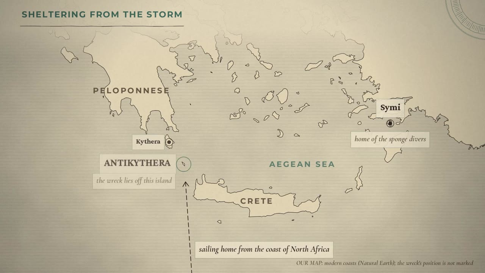
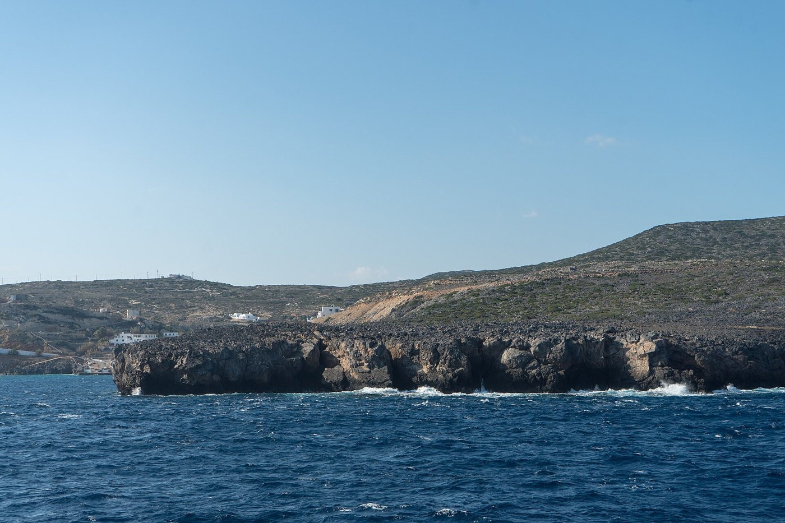
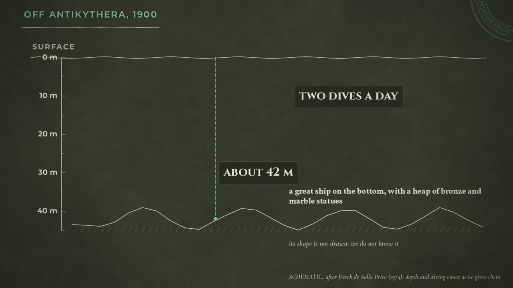
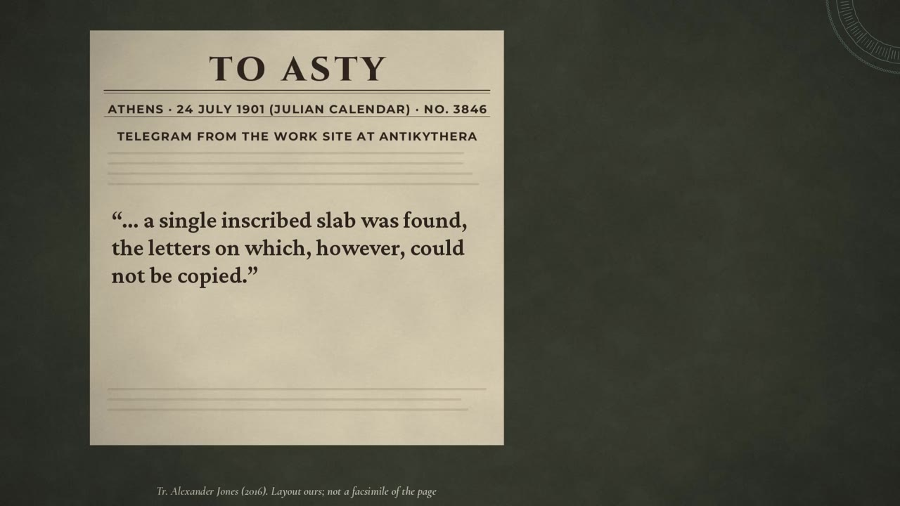
Did you know? According to Derek de Solla Price, the sponge divers who raised the wreck could go down only twice a day, for about five minutes on the bottom. When the work ended, one diver had died and two were disabled for life.
Did you know? The machine may turn up in a telegram of 1901 about “a single inscribed slab” whose letters “could not be copied”. No inscribed stone from the wreck is known, so Alexander Jones thinks this was our machine.
The gears are spotted, 1902
Then the pieces lay in the national museum in Athens, among bronze scraps kept in the hope of finding more of a famous statue from the wreck, the Youth of Antikythera. In the spring of 1902, a visitor came to look, with his wife and his sister-in-law. Among the scraps he noticed toothed gears, and an inscription in mirror writing. Many books say he was the archaeologist Valerios Stais. The newspapers of that week name Spyridon Stais, a former minister of education who had once taught mathematics. As minister, he had won the government's support for the salvage.
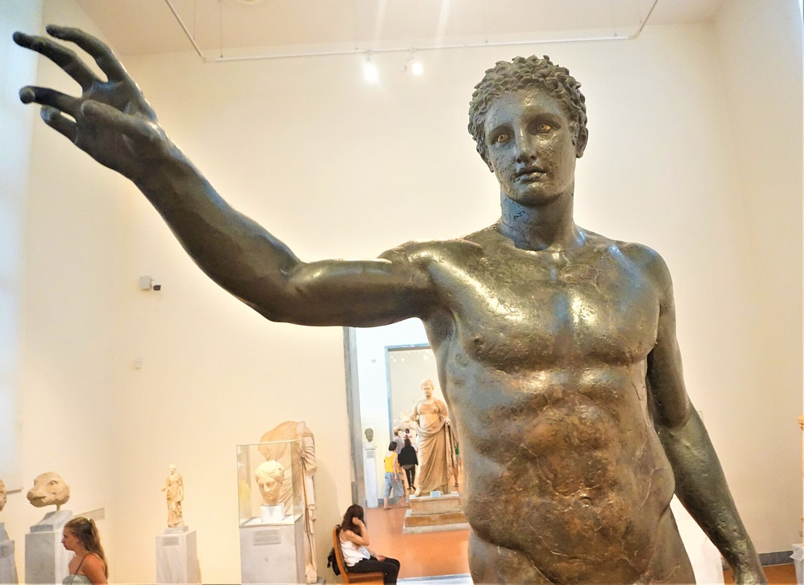
Did you know? The man who spotted the gears in 1902 was not an archaeologist. The newspapers of that week name Spyridon Stais, a former minister of education who had once taught mathematics, and he came to look with his wife and his sister-in-law.
What the machine showed
So what had he found? Today it is 82 fragments, about a third of the machine, with 30 corroded bronze gears. It sat in a wooden case, perhaps 33 by 18 by 10 centimetres, about the size of a shoebox. On the front, pointers moved around the zodiac and an Egyptian calendar, showing the Sun, the Moon, and probably the five planets the Greeks knew. On the back, one spiral dial counted the 235 months of a 19 year calendar, and another the 223 months of an eclipse cycle. A small dial turned once in four years, and named the games: the Olympics, the Pythian, Isthmian and Nemean games, the Naa at Dodona, and very probably the Halieia of Rhodes. Even the Moon's changing speed across the sky is built into the gears, following a theory of the astronomer Hipparchus. He worked in the second century B.C. The team that scanned it in 2005 wrote that it is “technically more complex than any known device for at least a millennium afterwards”.
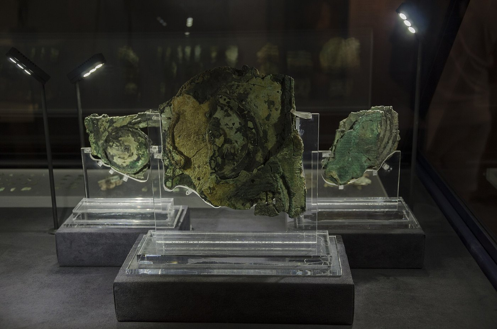
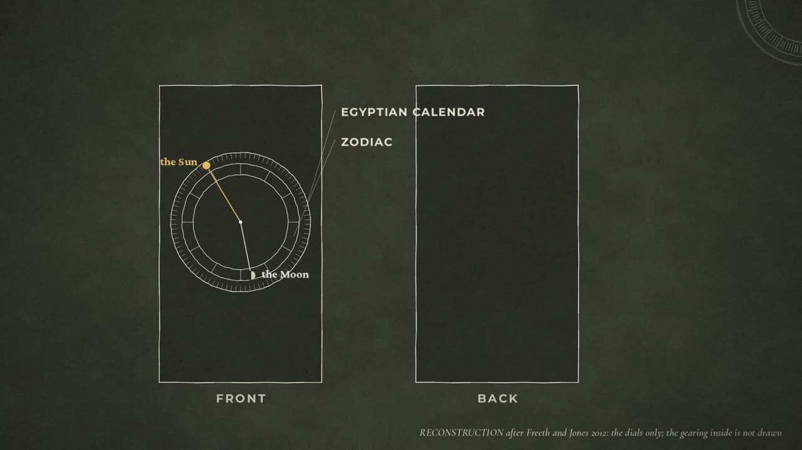
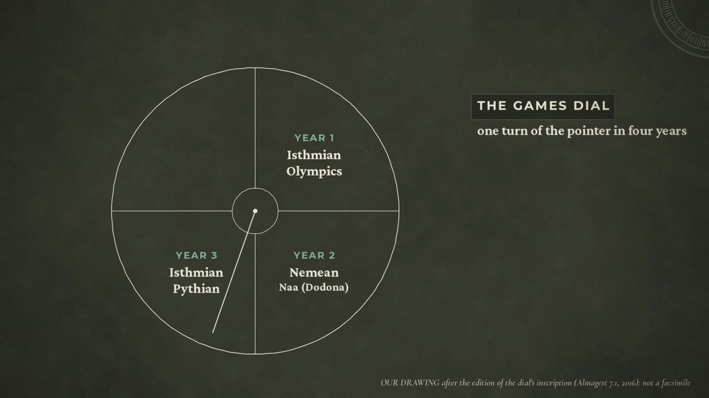
The user's guide on the cover
The machine even came with words: thousands of letters, some little more than a millimetre tall. X-ray scans let scholars read them, and the back cover turned out to describe the front, like a user's guide. One line, in the translation of Yanis Bitsakis and Alexander Jones, reads: “on the pointer lies a golden little sphere.” That was the Sun. Other little spheres marked the planets. In 2016, the front cover gave up two numbers of years: 462 for a cycle of Venus, and 442 for Saturn. The accurate Babylonian cycle for Venus would have needed a gear with 1,151 teeth, a prime number. The new cycle works with gears of moderate size. In 2021, Tony Freeth's team at University College London used these numbers for a new model of the front, with the planets on rings, one inside another. It is a reconstruction. Two thirds of the machine are lost, and the gearing for the planets is lost with them.
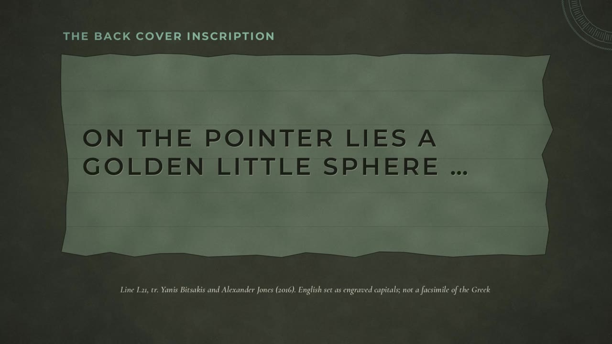
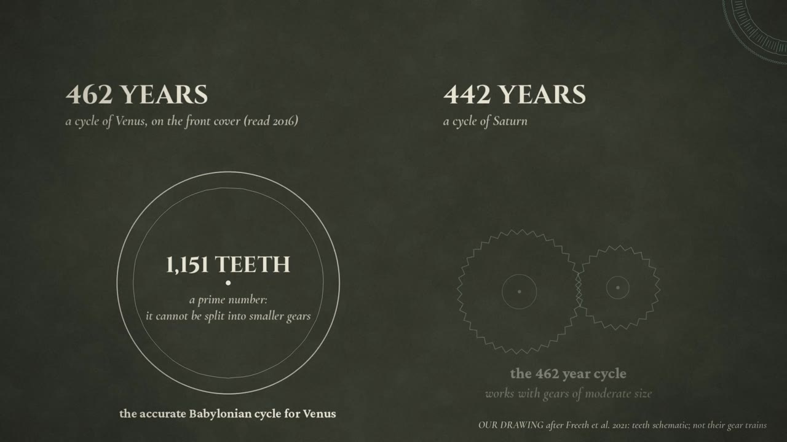
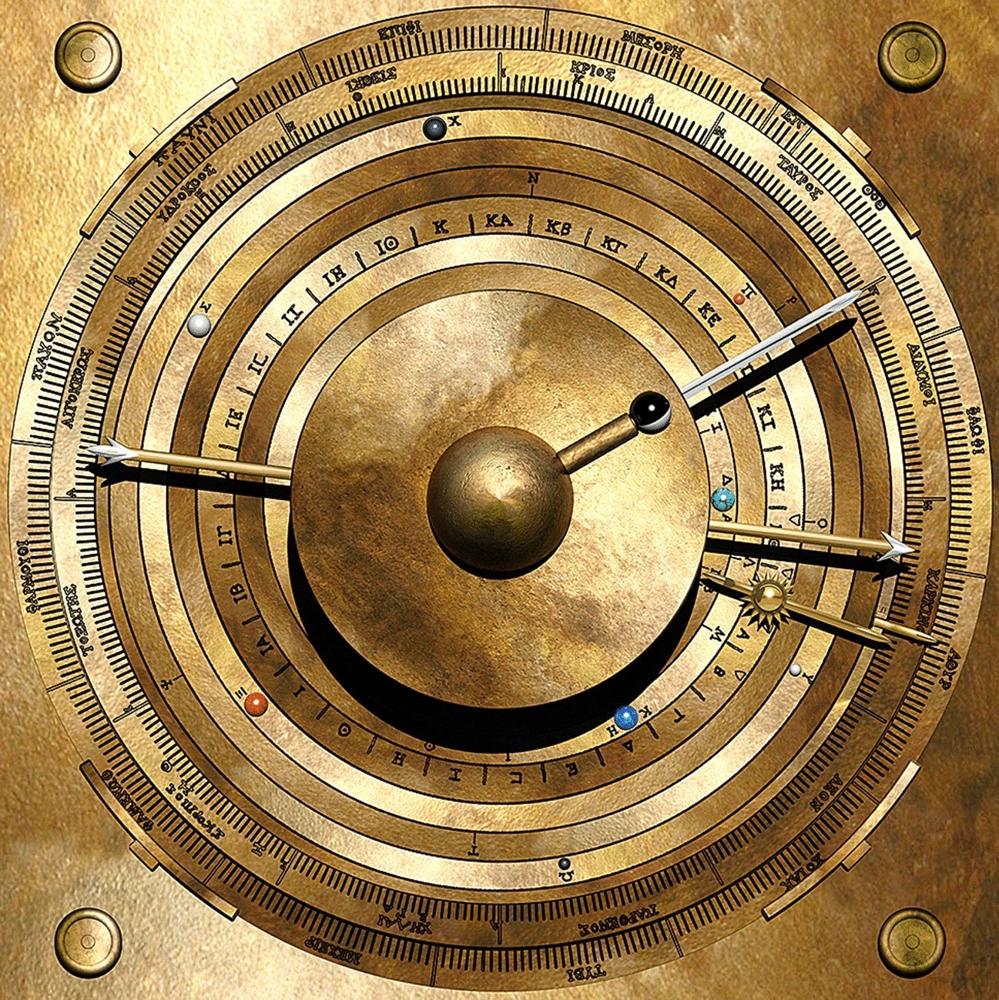
Did you know? The machine came with its own user's guide. Its back cover describes the front, and one line reads: “on the pointer lies a golden little sphere”. That was the Sun.
Cicero and the sphere of Archimedes
Our machine was not the only one of its kind, if the ancient writers are right. In a dialogue by Cicero, a speaker remembers the Roman consul Gaius Sulpicius Gallus at the house of Marcus Marcellus. Gallus had a sphere brought out. Marcellus's grandfather had carried it off when Rome took Syracuse, and took nothing else home from all the loot. Its maker was Archimedes, who, Livy records, was killed in that sack by a soldier who did not know who he was. When Gallus turned it, the speaker says, “the same eclipse of the sun happened on the globe as would actually happen.” Gallus knew his eclipses. According to Livy, on the eve of a battle against Macedon, he told the Roman army that the Moon would go dark that night, so that nobody would take it for an omen. In another of Cicero's dialogues, a Stoic speaker mentions “the orrery recently constructed by our friend Posidonius, which at each revolution reproduces the same motions of the sun, the moon and the five planets”. Around A.D. 400, the poet Claudian imagined Jupiter laughing at Archimedes' sphere, in which “a toy moon waxes and wanes month by month”. None of these is our machine, but such devices were known, and admired.
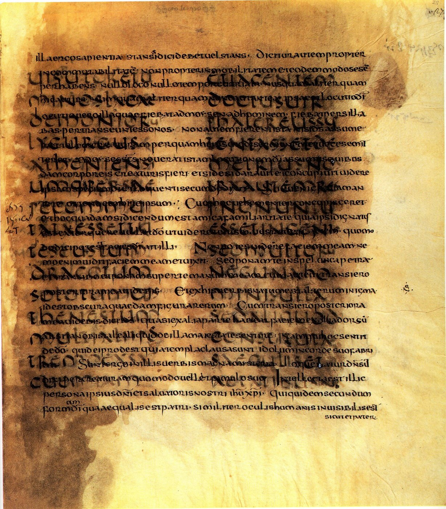
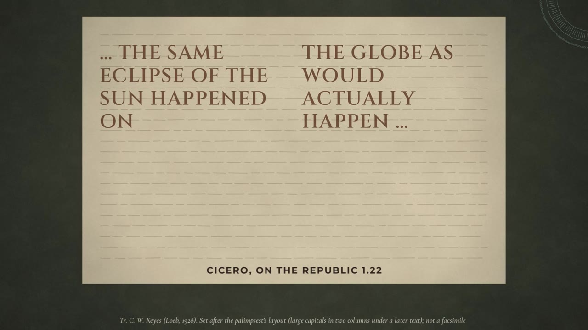
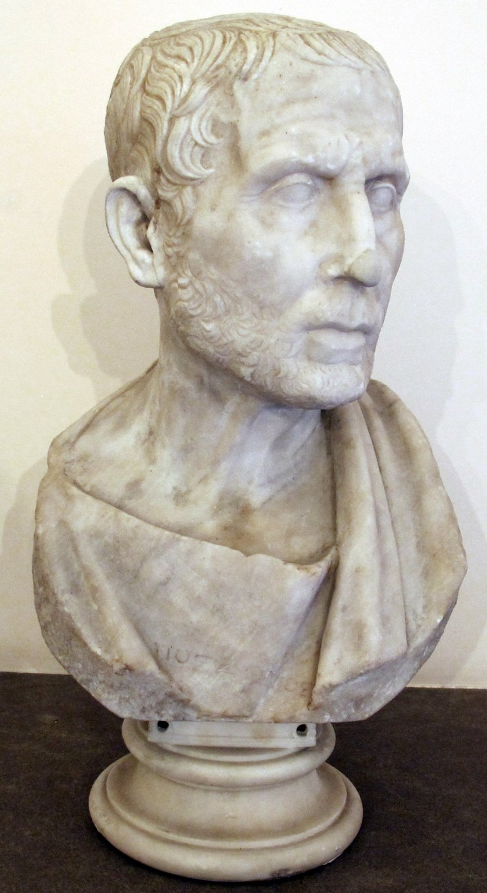
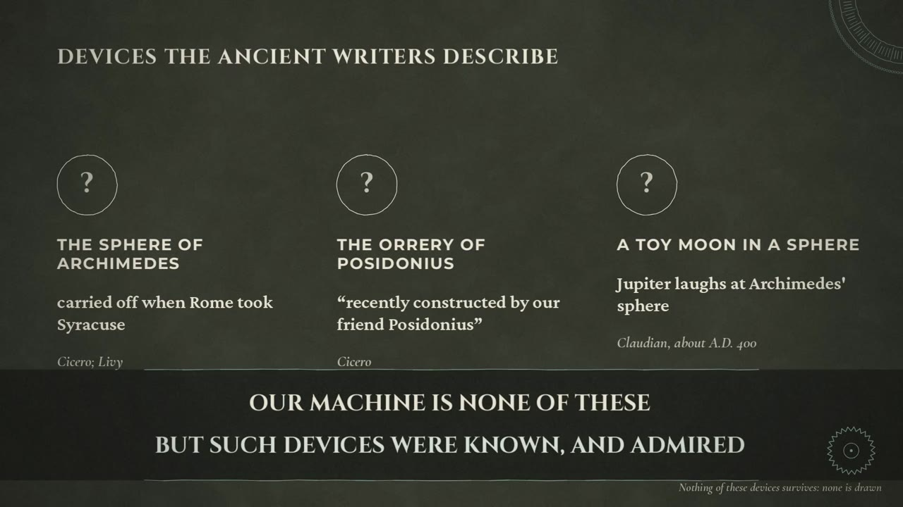
Did you know? Marcellus's grandfather took Archimedes' sphere when Rome took Syracuse, and took nothing else home from all the loot.
Did you know? According to Livy, Gallus told the Roman army on the eve of a battle that the Moon would go dark that night, so that nobody would take it for an omen.
When was it made, and by whom?
So who made ours, and when? Start with the ship. Its coins and pottery date the wreck to around 60 B.C., give or take 10 years. The lettering on the machine looks like the second half of the second century B.C., but letters alone can be a century out either way. In 2014, two separate studies found that its eclipse dial starts in the spring of 205 B.C. But Alexander Jones argues that a designer could have chosen that starting point as late as about 60 B.C. The month names on the back belong to the calendar of Corinth. The research team first pointed to Corinth's colonies in northwest Greece, or to Syracuse, where Archimedes had lived long before. Their later edition leans to Corinth itself or to Epirus, in the northwest. Yet the star calendar on the front fits the latitude of Rhodes or southern Greece, and Rhodes had the Halieia games, and Posidonius. In 1974, Price even floated what he called “a faint but quite unprovable possibility”: that the ship carried the goods of Cicero, who had stayed on Rhodes. The honest answer is that we do not know who made it, or where.
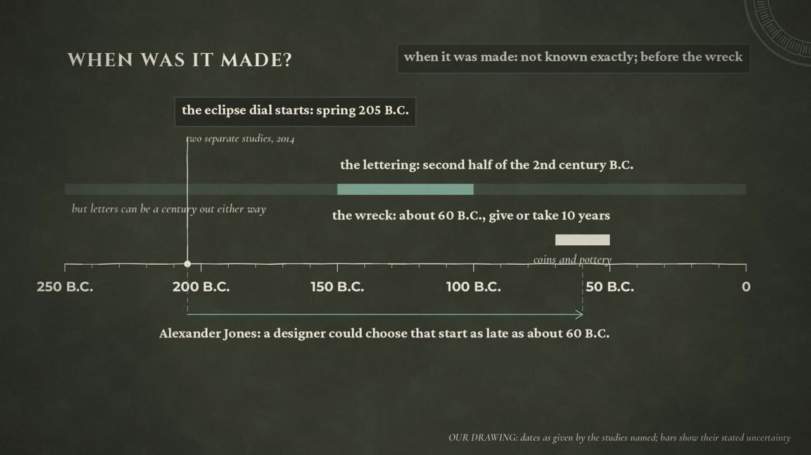
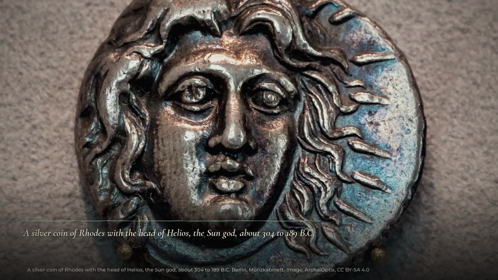
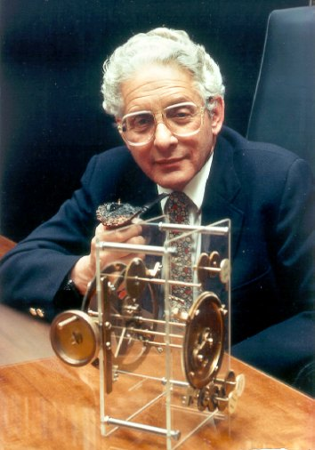
The calendar ring: 354 or 365 holes?
Which brings us back to the ring. It sits on the front dial, carries the Greek names of Egyptian months, and less than a quarter of it survives. Under it, the X-ray scans show 81 tiny holes. For about a century, many scholars assumed the full circle had 365. Then a YouTuber, Chris Budiselic, set out to make a replica of the calendar ring, and needed the number. With three colleagues he measured every hole, and in 2020 they argued for 354, a lunar year. Their range was still wide, from about 347 to 367. Late in 2023, a colleague showed the data to Graham Woan, a Glasgow astronomer, who took it on over the Christmas holidays. His colleague Joseph Bayley adapted the methods they use on the signals of the LIGO detectors, ripples in space from colliding black holes. Both came out at 354 or 355 holes. 360 holes was about 229 times less likely than 354, and 365, on their model, was not plausible. And the holes sit on a circle of 77 millimetres radius, off it on average by under 0.03 millimetres, made by hand more than 2,000 years ago. Even so, the two physicists wrote that they could not pin the count to one whole number.
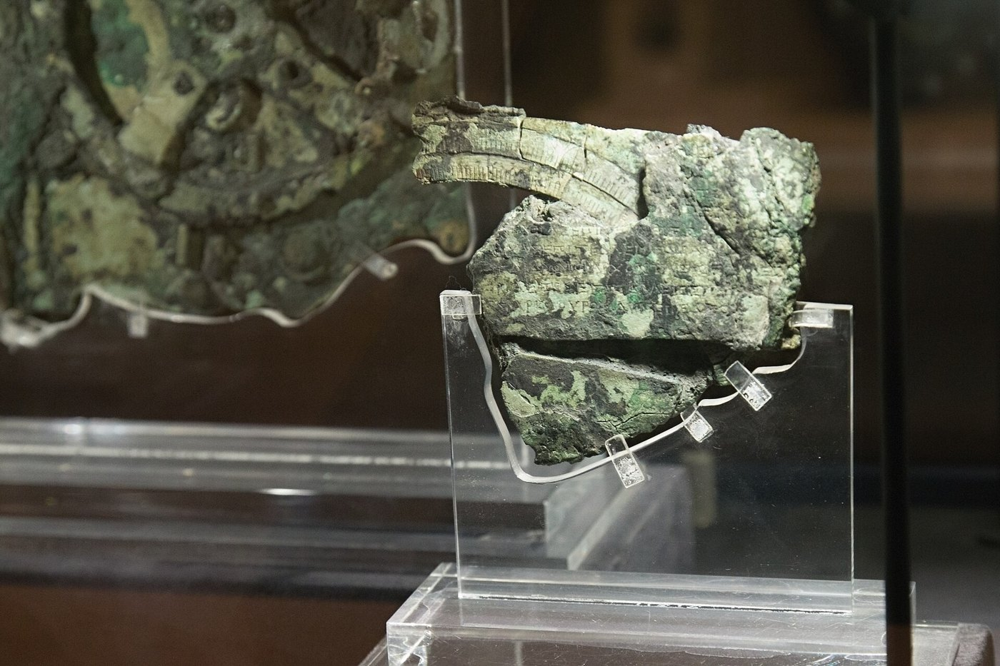
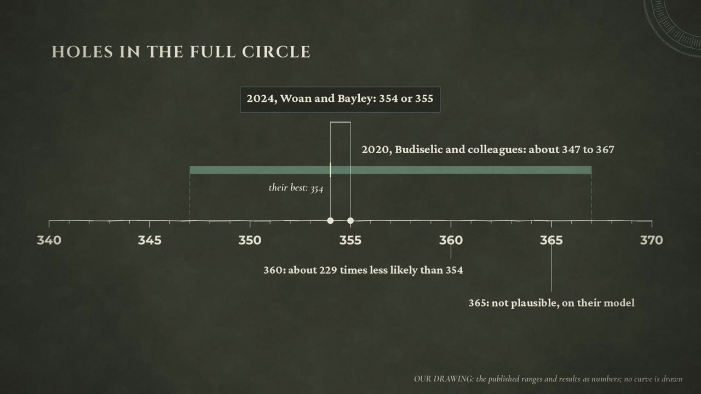
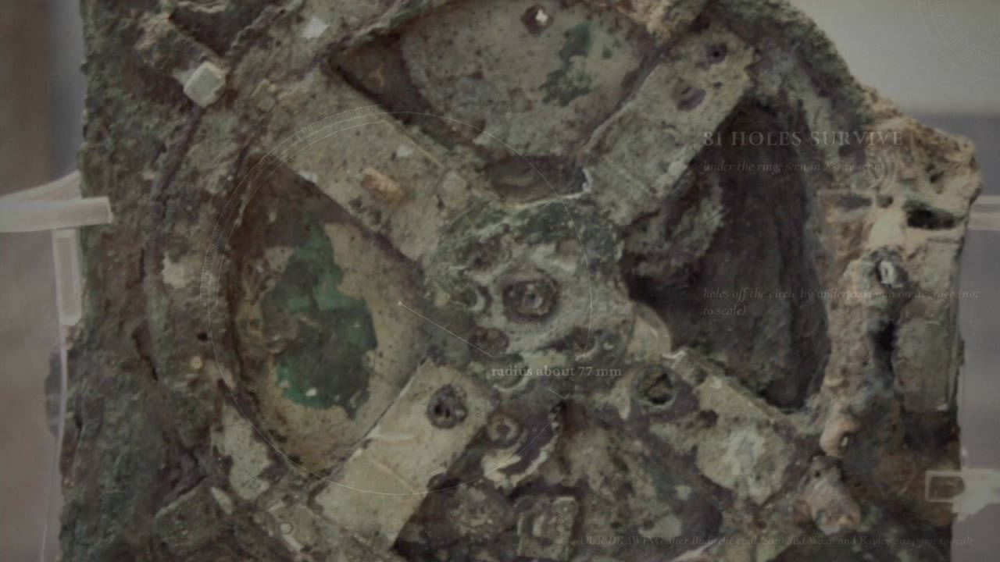
Did you know? The new count began with a YouTuber, Chris Budiselic, who wanted to build a replica of the calendar ring and needed the number. A Glasgow astronomer, Graham Woan, took on his data over the Christmas holidays.
Did you know? The holes were counted with methods used on the signals of the LIGO detectors, ripples in space from colliding black holes.
The experts disagree
So does that make it a calendar of the Moon? Here the experts split. Woan told the New York Times that it is “a slightly contentious idea”, but “the evidence is rather clear”. Tony Freeth told the same paper that the conclusion was “just wrong”. The machine, he noted, already contains a more precise lunar calendar. Mike Edmunds, who chairs the Antikythera Mechanism Research Project, sees “no obvious reason to doubt” the count of 354. But he doubts it means a lunar calendar. “It is not at all clear,” he said, “how it would work and how it would relate to the markings on the front of the calendar ring.” Those surviving markings carry the names of Egyptian months, and the Egyptian year had 365 days. So the count may be close to settled, but what it meant is not.
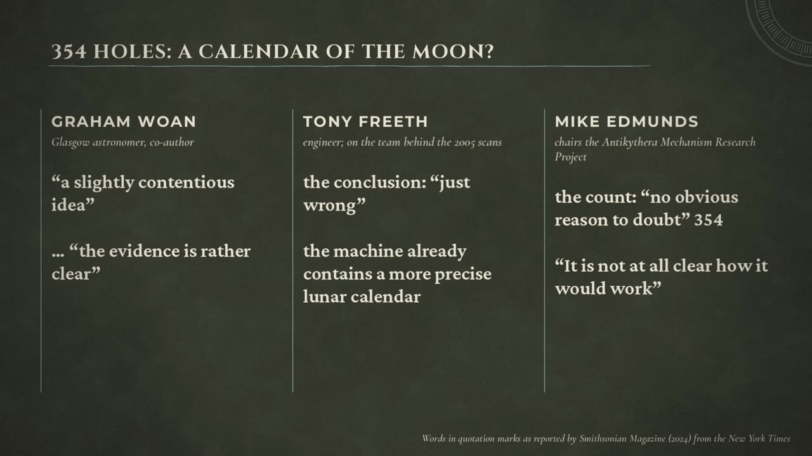
Did it even work?
There is one more doubt: did the gears even run smoothly? In 2025, two researchers in Argentina, Esteban Szigety and Gustavo Arenas, simulated its triangular teeth with the errors Edmunds had measured on the fragments. On those numbers, it would probably have jammed before its Sun pointer had moved through about four months. But they doubt that the corroded pieces still show the original errors, and find it unlikely that anyone built such a machine not to work. Their study was posted as a preprint.
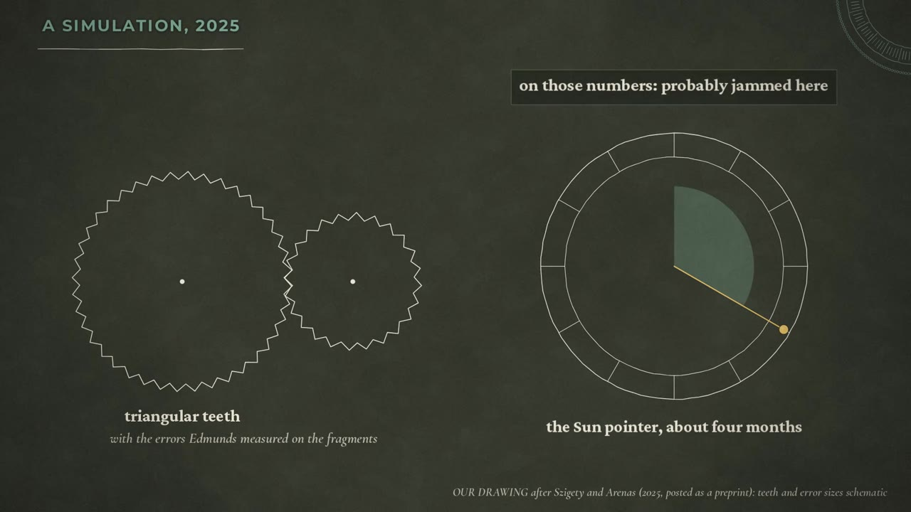
And nothing about it needs aliens, a lost super civilisation, or a modern hoax. Its back cover uses a rare word for skipped calendar days, found elsewhere only in the astronomer Geminus, and in a tale about Memnon of Rhodes, a commander who cut his soldiers' pay for the skipped days. Its month names match a calendar that scholars pieced together only in the late twentieth century. Its age, Jones writes, is “not just a credible assumption but a demonstrable fact”.
Did you know? The back cover uses a rare word for skipped calendar days, found elsewhere only in the astronomer Geminus and in a tale about Memnon of Rhodes, a commander who cut his soldiers' pay for the skipped days.
What we really know
So what do we really have? A Greek machine of the second or first century B.C., that modelled the Sun, the Moon, eclipses and the games. What would settle the rest is more of it. Divers have been back to the wreck since 2015, hoping for missing fragments. A piece of the ring with its start and end, or a line of text about that calendar, could settle the argument.
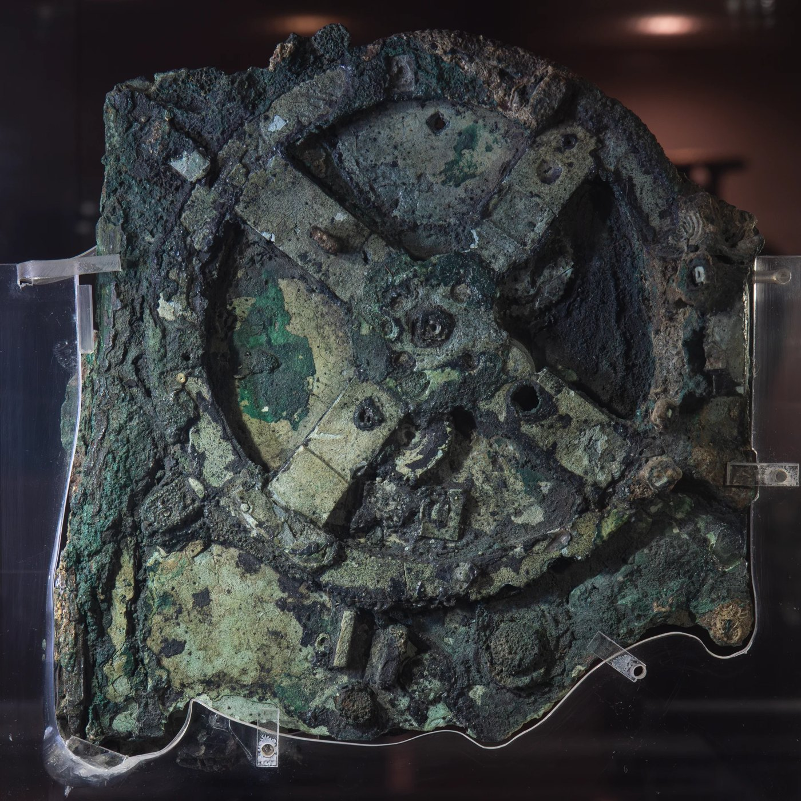
Verdict
My verdict: the holes most likely numbered 354 or 355, not 365. Why the maker chose that number, and who the maker was, nobody yet knows.
Over to you
Three hundred fifty-four holes under a ring of Egyptian months: a calendar of the Moon, or something nobody has thought of yet? And if you could hold one machine from the ancient world, would it be this one, or the sphere of Archimedes that Gallus turned for his friends?
Prefer to watch? The video on YouTube covers the same story with the full animations. Jump to a part:
- 0:00 The holes nobody can agree on
- 1:22 Sponge divers find the wreck, 1900
- 2:27 The gears are spotted, 1902
- 3:06 What the machine showed
- 4:11 The user's guide on the cover
- 5:23 Cicero and the sphere of Archimedes
- 6:42 When was it made, and by whom?
- 7:58 The calendar ring: 354 or 365 holes?
- 9:27 The experts disagree
- 10:19 Did it even work?
- 11:23 What we really know
- 11:50 Verdict
- 12:21 The website
Quick answers
What is the Antikythera mechanism?
A box of bronze gears pulled from a shipwreck off the small Greek island of Antikythera. Turn its knob, and pointers showed the Sun, the Moon, coming eclipses, and the years of the Olympic Games. Today it is 82 fragments, about a third of the machine, with 30 corroded bronze gears, from a wooden case perhaps 33 by 18 by 10 centimetres, about the size of a shoebox. The University of Glasgow calls it the oldest known analogue computer, and the team that scanned it in 2005 wrote that it is “technically more complex than any known device for at least a millennium afterwards”.
How many holes did the Antikythera mechanism's calendar ring have?
Less than a quarter of the ring survives, and under it the X-ray scans show 81 tiny holes. For about a century, many scholars assumed the full circle had 365. In 2020 Chris Budiselic, a YouTuber making a replica, and three colleagues measured every hole and argued for 354, a lunar year, with a wide range from about 347 to 367. In 2024 Graham Woan and Joseph Bayley of the University of Glasgow, using methods built for the signals of gravitational-wave detectors, both came out at 354 or 355. On their model 360 holes was about 229 times less likely than 354, and 365 was not plausible. Even so, they could not pin the count to one whole number.
Was the Antikythera mechanism a lunar calendar?
Here the experts split. Graham Woan told the New York Times that it is “a slightly contentious idea”, but “the evidence is rather clear”. Tony Freeth told the same paper that the conclusion was “just wrong”: the machine, he noted, already contains a more precise lunar calendar. Mike Edmunds, who chairs the Antikythera Mechanism Research Project, sees “no obvious reason to doubt” the count of 354, but doubts it means a lunar calendar. The surviving markings carry the names of Egyptian months, and the Egyptian year had 365 days. So the count may be close to settled, but what it meant is not.
Who made the Antikythera mechanism, and when?
We do not know who made it, or where. Its coins and pottery date the wreck to around 60 B.C., give or take ten years. The lettering looks like the second half of the second century B.C., but letters alone can be a century out either way. In 2014 two separate studies found that its eclipse dial starts in the spring of 205 B.C., but Alexander Jones argues that a designer could have chosen that starting point as late as about 60 B.C. The month names belong to the calendar of Corinth, and the research team's later edition leans to Corinth itself or to Epirus; yet the star calendar on the front fits the latitude of Rhodes or southern Greece.
Who found the Antikythera mechanism?
Sponge divers from the island of Symi, who took shelter off Antikythera from a storm shortly before Easter in 1900. One of them, Elias Stadiatis, went down about 42 metres and found a great ship on the bottom. According to Derek de Solla Price, the divers could go down only twice a day, for about five minutes on the bottom, and by the time the work ended in the autumn of 1901 one diver had died. In the spring of 1902 a visitor to the national museum in Athens noticed toothed gears among the bronze scraps. Many books say he was the archaeologist Valerios Stais; the newspapers of that week name Spyridon Stais, a former minister of education who had once taught mathematics.
Where it happened
- Antikythera (60 B.C.): The small Greek island between Crete and the Peloponnese off which sponge divers found the wreck in 1900, at about 42 metres (Price 1974). The year stands for the wreck, around 60 B.C., give or take ten years. The dot marks the island, not the wreck: we have not read a position for it.
- National Archaeological Museum, Athens (A.D. 1902): Where the pieces lay among bronze scraps, and where, in the spring of 1902, a visitor noticed toothed gears and an inscription in mirror writing (IAM 2). The fragments are there today.
- Symi (A.D. 1900): Home island of the sponge divers who found the wreck while sailing home from the coast of North Africa (Price 1974). Coordinates approximate.
- Rhodes (100 B.C.): The star calendar on the front fits the latitude of Rhodes or southern Greece (IAM 3); Rhodes had the Halieia games, very probably named on the games dial, and Posidonius. Where the machine was made is not known. The year stands for the machine, second or first century B.C.
- Corinth (100 B.C.): The month names on the back belong to the calendar of Corinth; the research team's later edition leans to Corinth itself or to Epirus (IAM 4). The year stands for the machine and is approximate.
- Dodona (100 B.C.): Sanctuary in Epirus, northwest Greece, whose games, the Naa, are named on the four-year games dial (IAM 4). The year stands for the machine and is approximate.
- Syracuse (A.D. 2008): Where Archimedes lived, whose sphere Marcellus's grandfather carried off when Rome took the city (Cicero, De re publica 1.21). In 2008 the research team first pointed to Corinth's colonies in northwest Greece, or to Syracuse, for the calendar; the year stands for that proposal.
Sources
Ancient writers and modern work
All read on 24 November 2026. What each source supports is listed under it; the claim-by-claim table is in `claims.md`, the verbatim excerpts in
`research/primary-texts.md` and `research/scholarship.md`.
The machine's own words
**The inscriptions of the Antikythera mechanism**, edited by the Antikythera Mechanism Research Project in *Almagest* 7.1 (2016), the complete issue as an open
PDF on the NYU archive: https://archive.nyu.edu/bitstream/2451/71597/2/IAM%20Almagest%207.1%202016%20Complete.pdf (papers under CC BY-NC 4.0).
BC" but not excluding 200 B.C. or the wreck date; the front dial (zodiac and a moveable Egyptian calendar scale, pointers for Sun, Moon and planets); the Metonic
spiral (235 months, 19 years), the Saros spiral (223 months), the Games Dial (once in four years); the project's own fit of "the ring of 365 holes"; footnote 6 on
the coins and ceramics of the wreck.
translation); no inscribed stone slab known from the wreck; Spyridon Stais's visit to the museum in May 1902 (Julian) with his wife and sister-in-law; Stais was a
former Minister of Education, not an archaeologist, who had taught mathematics; the later confusion with Valerios Stais; the room of unidentified bronzes kept for
pieces of the "Youth of Antikythera".
out of the question").
the Naa of Dodona and "very probably" the Halieia of Rhodes.
word for skipped days, otherwise known only from Geminus and from pseudo-Aristotle's anecdote about Memnon of Rhodes.
Ancient writers
**Cicero, *De re publica* 1.21-22.** Latin: The Latin Library (thelatinlibrary.com/cicero/repub1.shtml). English: C. W. Keyes, Loeb Classical Library (1928), as
reproduced on the Archimedes pages of Chris Rorres (math.nyu.edu/Archimedes/Sphere/SphereSources.html), checked against the Latin.
the globe as would actually happen". The speaker in the dialogue is Philus.
**Cicero, *De natura deorum* 2.88.** Latin: The Latin Library (cicero/nd2.shtml). English: H. Rackham, Loeb Classical Library (1933), in the LacusCurtius
transcription (penelope.uchicago.edu, Cicero, de Natura Deorum, book 2, part B).
planets". The speaker is the Stoic Balbus. The transcription has typing errors elsewhere in the sentence ("every twenty-four hundred"); that part is not used.
**Claudian, *Carmina minora* 51 ("Archimedes' sphere"),** tr. M. Platnauer, Loeb Classical Library (1922), as reproduced on the same Archimedes pages.
**Livy 25.31.9 and 44.37.5-7,** Latin, The Latin Library (livy/liv.25.shtml, liv.44.shtml). Paraphrased by us, no quote.
the battle with Perseus, that the Moon would be eclipsed, so that no one would take it for a portent.
Excavation, museum and imaging
**D. de Solla Price, *Gears from the Greeks: The Antikythera Mechanism, a Calendar Computer from ca. 80 B.C.*,** Transactions of the American Philosophical Society
64.7 (1974). Read in an OCR text on archive.org (item de-solla-price-derek-gears-from-the-greeks; licence of the upload not stated, so used for reading only).
killed and two disabled by the end in September 1901; Price's "faint but quite unprovable possibility" that the ship carried Cicero's goods; his Rhodes
hypothesis. Jones (IAM 2) notes that Price's history of 1900 to 1905 "is not quite free of errors"; we attribute these details to Price.
**Hellenic Ministry of Culture, "The Antikythera Mechanism"** (olympicgames.culture.gov.gr), the National Archaeological Museum's inventory X 15087.
**T. Freeth and others, "Decoding the ancient Greek astronomical calculator known as the Antikythera Mechanism", *Nature* 444 (2006) 587-591.** Abstract only
(nature.com/articles/nature05357).
display "now lost".
**T. Freeth, A. Jones, J. M. Steele, Y. Bitsakis, "Calendars with Olympiad display and eclipse prediction on the Antikythera Mechanism", *Nature* 454 (2008)
614-617.** Abstract only (nature.com/articles/nature07130).
**T. Freeth and others, "A Model of the Cosmos in the ancient Greek Antikythera Mechanism", *Scientific Reports* 11, 5821 (2021),** open access (CC BY 4.0).
spheres" and a "little golden sphere"; the 2016 numbers 462 (Venus) and 442 (Saturn); the 1,151-tooth problem; the ring display of the new model.
Date and maker
**A. Jones, "The Epoch Dates of the Antikythera Mechanism (With an Appendix on its Authenticity)", ISAW Papers 17 (2020),** open (dlib.nyu.edu/awdl/isaw/isaw-papers/17/).
the 2014 datings of the eclipse cycle to 205 B.C.; that the epoch could have been chosen by a designer as late as about 60 B.C.; Appendix 2 on claims of a modern
origin and the proof of antiquity ("not just a credible assumption but a demonstrable fact").
**C. C. Carman and J. Evans, "On the epoch of the Antikythera mechanism and its eclipse predictor", *Archive for History of Exact Sciences* 68 (2014) 693-774.**
Author's copy (abstract and opening read).
The calendar ring
**C. Budiselic, A. T. Thoeni, M. Dubno, A. T. Ramsey, "The Antikythera Mechanism: Evidence of a Lunar Calendar", *Horological Journal* (December 2020),** the
British Horological Institute's PDF (bhi.co.uk).
365; the peg through the ring into a hole; the case for 354.
**G. Woan and J. Bayley, "An improved calendar ring hole-count for the Antikythera mechanism",** arXiv 2403.00040 (29 February 2024), the preprint of the paper in
the *Horological Journal* (June 2024). Open (CC BY 4.0). The printed version was not seen.
times more probable than 360"; "not been able to definitively constrain N to a particular integer".
**University of Glasgow news, "Gravitational wave researchers cast new light on Antikythera mechanism mystery", 27 June 2024** (gla.ac.uk).
Bayley's LIGO methods; 354 or 355 holes; radius 77.1 mm; average radial variation 0.028 mm.
**Smithsonian Magazine, "Gravitational wave scientists are unraveling the mysteries of the world's oldest analog computer" (2024),** read in the Wayback Machine copy,
quoting the *New York Times* (Becky Ferreira).
Edmunds, "no obvious reason to doubt", "It is not at all clear how it would work and how it would relate to the markings on the front of the calendar ring".
The *New York Times* article itself was not read (paywall).
**E. G. Szigety and G. F. Arenas, "The Impact of Triangular-Toothed Gears on the Functionality of the Antikythera Mechanism",** arXiv 2504.00327 (2025), preprint.
results speculative.
Image credits
- Fragment C: part of the front dial, with the calendar scale of Egyptian months and the zodiac scale. National Archaeological Museum, Athens. Image: Logg Tandy, CC BY 4.0
- Fragment C in front of Fragment A. National Archaeological Museum, Athens. Image: Zde, CC BY-SA 4.0
- The fragments on display in the National Archaeological Museum, Athens. Image: Peulle, CC BY-SA 4.0
- Antikythera from the sea. Image: Alexey Komarov, CC BY-SA 4.0
- Fragment A, the largest piece, with its big four-spoked gear. National Archaeological Museum, Athens. Image: Logg Tandy, CC BY 4.0
- LIGO Hanford, one of the two detectors of gravitational waves, United States. Image: LIGO Laboratory, Public domain
- Fragment A in its case. National Archaeological Museum, Athens. Photo 2009. Image: Giovanni Dall'Orto, Attribution (free with credit)
- The mechanism's room in the museum, with the fragments and the small pieces. National Archaeological Museum, Athens. Image: Vislupus, CC BY-SA 4.0
- Potamos, the harbour of Antikythera, today. Image: Alexey Komarov, CC BY-SA 4.0
- Bronze statuettes from the Antikythera wreck. National Archaeological Museum, Athens. Image: Tilemahos Efthimiadis from Athens, Greece, CC BY 2.0
- A bronze arm from the Antikythera wreck. National Archaeological Museum, Athens. Image: Giovanni Dall'Orto, Attribution (free with credit)
- Officials, crew and sponge divers on the deck of the Greek naval ship Mykali over the wreck, winter 1900 to 1901. Image: Unknown photographer, Public domain
- Derek de Solla Price, who wrote the history of the find (family photograph). Image: family photograph (uploaded by Artistsmarket, English Wikipedia), Public domain
- A letter of the Greek Ministry of Naval Affairs about the ship Mykali and the wreck works, 26 February 1901. Image: Greek Ministry of Naval Affairs, Public domain
- Divers and crew over the wreck, winter 1900 to 1901. Image: Unknown photographer, Public domain
- A diving boat under the cliffs of Antikythera, between November 1900 and September 1901. Image: Unknown photographer, Public domain
- The Youth of Antikythera today. National Archaeological Museum, Athens. Image: Joyofmuseums, CC BY-SA 4.0
- Smaller fragments, numbered by the museum. National Archaeological Museum, Athens. Image: Francesco Bini, CC BY-SA 4.0
- Fragment A, back, in its case. National Archaeological Museum, Athens. Image: Juanxi, CC BY-SA 3.0
- Fragments of the mechanism in the National Archaeological Museum, Athens. Image: Joyofmuseums, CC BY-SA 4.0
- Fragment F. National Archaeological Museum, Athens. Image: Logg Tandy, CC BY 4.0
- A modern reconstruction of the machine on display in the National Archaeological Museum, Athens (back, with the two spiral dials). Image: Tilemahos Efthimiadis from Athens, Greece, CC BY 2.0
- The stadium at Olympia from above. Image: dronepicr, CC BY 2.0
- A modern reconstruction on display in the National Archaeological Museum, Athens (side view of the gears). Image: Tilemahos Efthimiadis from Athens, Greece, CC BY 2.0
- Fragment B, with part of a back-dial scale. National Archaeological Museum, Athens. Image: Logg Tandy, CC BY 4.0
- Fragment B from the side, with the curved scale strips of a dial. National Archaeological Museum, Athens. Image: Tilemahos Efthimiadis from Athens, Greece, CC BY 2.0
- Fragment G, with lines of tiny Greek letters. National Archaeological Museum, Athens. Image: Logg Tandy, CC BY 4.0
- Where the inscriptions sit on the machine, after Freeth and others 2021 (Scientific Reports, CC BY 4.0). Image: Tony Freeth, David Higgon, Aris Dacanalis, Lindsay MacDonald, Myrto Georgakopoulou, Adam Wojcik, CC BY 4.0
- Fragment 19, an inscribed piece of the mechanism. National Archaeological Museum, Athens. Image: Logg Tandy, CC BY 4.0
- Finding the planet cycles: the numbers 462 for Venus and 442 for Saturn in red, Freeth and others 2021. Image: Tony Freeth, David Higgon, Aris Dacanalis, Lindsay MacDonald, Myrto Georgakopoulou, Adam Wojcik, CC BY 4.0
- Babylonian records of Venus: the Venus Tablet of Ammisaduqa, a copy from the Neo-Assyrian period. British Museum. Image: Fæ, CC BY-SA 3.0
- The 2021 model of the front display: planets on rings, one inside another, with little sphere markers. Reconstruction, Freeth and others 2021. Image: Tony Freeth, David Higgon, Aris Dacanalis, Lindsay MacDonald, Myrto Georgakopoulou, Adam Wojcik, CC BY 4.0
- A proposed gearing for the planets, computer model by Freeth and others 2021. Image: Tony Freeth, David Higgon, Aris Dacanalis, Lindsay MacDonald, Myrto Georgakopoulou, Adam Wojcik, CC BY 4.0
- Fragment A from the back. National Archaeological Museum, Athens. Image: Logg Tandy, CC BY-SA 4.0
- The Greek theatre of Syracuse, the city Rome took in Archimedes' time. Image: Pequod76, Public domain
- A Roman portrait of Cicero, Capitoline Museums, Rome. Image: Wilfredor, CC0
- Cicero, On the Republic: the only manuscript, written over by a later text. Vatican Library, Vat. lat. 5757, folio 277r. Image: Biblioteca Apostolica Vaticana (photograph of the manuscript), Public domain
- A coin of 50 B.C. honouring Marcus Claudius Marcellus, who took Syracuse; a triskeles, the sign of Sicily, behind his head. Image: CNG, CC BY-SA 2.5
- Cicero, On the Nature of the Gods, a later manuscript copy. Vatican Library, Urb. lat. 319, folio 2r. Image: Biblioteca Apostolica Vaticana (photograph of the manuscript), Public domain
- A Roman portrait identified as Posidonius. Naples, National Archaeological Museum. Image: Sailko, CC BY 3.0
- A bronze arm and statuettes from the Antikythera wreck. National Archaeological Museum, Athens. Image: Tilemahos Efthimiadis from Athens, Greece, CC BY 2.0
- A silver coin of Rhodes with the head of Helios, the Sun god, about 304 to 189 B.C. Berlin, Münzkabinett. Image: ArchaiOptix, CC BY-SA 4.0
- Fragment E. National Archaeological Museum, Athens. Image: Logg Tandy, CC BY 4.0
- The three largest fragments in their case. National Archaeological Museum, Athens. Image: Juanxi, CC BY-SA 3.0
- Fragment A. National Archaeological Museum, Athens. Image: Tilemahos Efthimiadis from Athens, Greece, CC BY 2.0
- Animations, maps and diagrams: original work, Spoken History. Map data: Natural Earth, public domain.
- Music: Mozart - String Quartet No. 19 in C major, K465 'Dissonance' - II. Andante cantabile (Musopen String Quartet): Wolfgang Amadeus Mozart; released to the public domain by Musopen (PD-author on the Commons file page)
- Music: Chopin - Nocturne No. 21 in C minor, B. 108 (Diana Hughes): Frédéric Chopin; released to the public domain by Musopen (PD-author on the Commons file page)
- Music: Ludwig van Beethoven — Cello Sonata No. 3 (2nd movement): Ludwig van Beethoven; CC0 on the Commons file page
- Music: Beethoven - String Quartet No. 6 in B flat major, Op. 18 No. 6 - II. Adagio, ma non troppo (Musopen String Quartet): Ludwig van Beethoven; released to the public domain by Musopen (PD-author on the Commons file page)
- Music: Brendan Kinsella - Mozart - Sonata No 13 In B Flat Major K333 - II Andante Cantabile: Wolfgang Amadeus Mozart; CC0 on the Commons file page
- Music: Mendelssohn - String Quartet No. 6 in F minor, Op. 80 - III. Adagio (Musopen String Quartet): Felix Mendelssohn; released to the public domain by Musopen (PD-author on the Commons file page)
- Music: Brahms - Symphony No. 1 in C minor, Op. 68 - II. Andante sostenuto (Musopen Symphony): Johannes Brahms; released to the public domain by Musopen (PD-author on the Commons file page)
Transcript
Read the full narration
The Antikythera Mechanism. How many holes?. Under a two thousand year old bronze ring lie tiny holes, and scholars have argued over how many there were, and what they meant. The ring belongs to the Antikythera mechanism, a box of bronze gears pulled from a shipwreck off a small Greek island. Turn its knob, and pointers showed the Sun, the Moon, coming eclipses, and the years of the Olympic Games. The University of Glasgow calls it the oldest known analogue computer. A peg through the turning calendar ring into one of those holes is thought to have held it in place. 365 holes would fit the Egyptian year of 365 days. 354 would fit a year of twelve moons. In 2024, two physicists in Glasgow borrowed the maths built for gravitational waves, and got 354 or 355. Tony Freeth, an engineer on the team behind its scans of 2005, called their conclusion just wrong. So what did this machine really do, who made it, and how did a few holes start a quarrel? A storm, a former minister and a dialogue by Cicero will take us there. It all begins with a storm, shortly before Easter in 1900. Sponge divers from the island of Symi, sailing home from the coast of North Africa, took shelter off Antikythera, between Crete and the Peloponnese. One of them, Elias Stadiatis, went down about 42 metres, and found a great ship on the bottom, with a heap of bronze and marble statues. He came back up with proof, the bronze arm of a statue, larger than life, and that November the divers returned to raise the wreck. According to Derek de Solla Price, who wrote the history of the find, they could dive only twice a day, for about five minutes on the bottom. In the summer of 1901, an Athens newspaper printed a telegram from the site: a single inscribed slab was found, the letters on which, however, could not be copied. No inscribed stone from the wreck is known, so the historian Alexander Jones thinks this slab was our machine. When the work ended that autumn, one diver had died, and two were disabled for life. Then the pieces lay in the national museum in Athens, among bronze scraps kept in the hope of finding more of a famous statue from the wreck, the Youth of Antikythera. In the spring of 1902, a visitor came to look, with his wife and his sister-in-law. Among the scraps he noticed toothed gears, and an inscription in mirror writing. Many books say he was the archaeologist Valerios Stais. The newspapers of that week name Spyridon Stais, a former minister of education who had once taught mathematics. As minister, he had won the government's support for the salvage. So what had he found? Today it is 82 fragments, about a third of the machine, with 30 corroded bronze gears. It sat in a wooden case, perhaps 33 by 18 by 10 centimetres, about the size of a shoebox. On the front, pointers moved around the zodiac and an Egyptian calendar, showing the Sun, the Moon, and probably the five planets the Greeks knew. On the back, one spiral dial counted the 235 months of a 19 year calendar, and another the 223 months of an eclipse cycle. A small dial turned once in four years, and named the games: the Olympics, the Pythian, Isthmian and Nemean games, the Naa at Dodona, and very probably the Halieia of Rhodes. Even the Moon's changing speed across the sky is built into the gears, following a theory of the astronomer Hipparchus. He worked in the second century B.C. The team that scanned it in 2005 wrote that it is technically more complex than any known device for at least a millennium afterwards. The machine even came with words: thousands of letters, some little more than a millimetre tall. X-ray scans let scholars read them, and the back cover turned out to describe the front, like a user's guide. One line, in the translation of Yanis Bitsakis and Alexander Jones, reads: on the pointer lies a golden little sphere. That was the Sun. Other little spheres marked the planets. In 2016, the front cover gave up two numbers of years: 462 for a cycle of Venus, and 442 for Saturn. The accurate Babylonian cycle for Venus would have needed a gear with 1,151 teeth, a prime number. The new cycle works with gears of moderate size. In 2021, Tony Freeth's team at University College London used these numbers for a new model of the front, with the planets on rings, one inside another. It is a reconstruction. Two thirds of the machine are lost, and the gearing for the planets is lost with them. If you are enjoying this type of content, please don't forget to subscribe. Our machine was not the only one of its kind, if the ancient writers are right. In a dialogue by Cicero, a speaker remembers the Roman consul Gaius Sulpicius Gallus at the house of Marcus Marcellus. Gallus had a sphere brought out. Marcellus's grandfather had carried it off when Rome took Syracuse, and took nothing else home from all the loot. Its maker was Archimedes, who, Livy records, was killed in that sack by a soldier who did not know who he was. When Gallus turned it, the speaker says, the same eclipse of the sun happened on the globe as would actually happen. Gallus knew his eclipses. According to Livy, on the eve of a battle against Macedon, he told the Roman army that the Moon would go dark that night, so that nobody would take it for an omen. In another of Cicero's dialogues, a Stoic speaker mentions the orrery recently constructed by our friend Posidonius, which at each revolution reproduces the same motions of the sun, the moon and the five planets. Around A.D. 400, the poet Claudian imagined Jupiter laughing at Archimedes' sphere, in which a toy moon waxes and wanes month by month. None of these is our machine, but such devices were known, and admired. So who made ours, and when? Start with the ship. Its coins and pottery date the wreck to around 60 B.C., give or take 10 years. The lettering on the machine looks like the second half of the second century B.C., but letters alone can be a century out either way. In 2014, two separate studies found that its eclipse dial starts in the spring of 205 B.C. But Alexander Jones argues that a designer could have chosen that starting point as late as about 60 B.C. The month names on the back belong to the calendar of Corinth. The research team first pointed to Corinth's colonies in northwest Greece, or to Syracuse, where Archimedes had lived long before. Their later edition leans to Corinth itself or to Epirus, in the northwest. Yet the star calendar on the front fits the latitude of Rhodes or southern Greece, and Rhodes had the Halieia games, and Posidonius. In 1974, Price even floated what he called a faint but quite unprovable possibility: that the ship carried the goods of Cicero, who had stayed on Rhodes. The honest answer is that we do not know who made it, or where. Which brings us back to the ring. It sits on the front dial, carries the Greek names of Egyptian months, and less than a quarter of it survives. Under it, the X-ray scans show 81 tiny holes. For about a century, many scholars assumed the full circle had 365. Then a YouTuber, Chris Budiselic, set out to make a replica of the calendar ring, and needed the number. With three colleagues he measured every hole, and in 2020 they argued for 354, a lunar year. Their range was still wide, from about 347 to 367. Late in 2023, a colleague showed the data to Graham Woan, a Glasgow astronomer, who took it on over the Christmas holidays. His colleague Joseph Bayley adapted the methods they use on the signals of the LIGO detectors, ripples in space from colliding black holes. Both came out at 354 or 355 holes. 360 holes was about 229 times less likely than 354, and 365, on their model, was not plausible. And the holes sit on a circle of 77 millimetres radius, off it on average by under 0.03 millimetres, made by hand more than 2,000 years ago. Even so, the two physicists wrote that they could not pin the count to one whole number. So does that make it a calendar of the Moon? Here the experts split. Woan told the New York Times that it is a slightly contentious idea, but the evidence is rather clear. Tony Freeth told the same paper that the conclusion was just wrong. The machine, he noted, already contains a more precise lunar calendar. Mike Edmunds, who chairs the Antikythera Mechanism Research Project, sees no obvious reason to doubt the count of 354. But he doubts it means a lunar calendar. It is not at all clear, he said, how it would work and how it would relate to the markings on the front of the calendar ring. Those surviving markings carry the names of Egyptian months, and the Egyptian year had 365 days. So the count may be close to settled, but what it meant is not. There is one more doubt: did the gears even run smoothly? In 2025, two researchers in Argentina, Esteban Szigety and Gustavo Arenas, simulated its triangular teeth with the errors Edmunds had measured on the fragments. On those numbers, it would probably have jammed before its Sun pointer had moved through about four months. But they doubt that the corroded pieces still show the original errors, and find it unlikely that anyone built such a machine not to work. Their study was posted as a preprint. And nothing about it needs aliens, a lost super civilisation, or a modern hoax. Its back cover uses a rare word for skipped calendar days, found elsewhere only in the astronomer Geminus, and in a tale about Memnon of Rhodes, a commander who cut his soldiers' pay for the skipped days. Its month names match a calendar that scholars pieced together only in the late twentieth century. Its age, Jones writes, is not just a credible assumption but a demonstrable fact. So what do we really have? A Greek machine of the second or first century B.C., that modelled the Sun, the Moon, eclipses and the games. What would settle the rest is more of it. Divers have been back to the wreck since 2015, hoping for missing fragments. A piece of the ring with its start and end, or a line of text about that calendar, could settle the argument. My verdict: the holes most likely numbered 354 or 355, not 365. Why the maker chose that number, and who the maker was, nobody yet knows. 354 holes under a ring of Egyptian months: a calendar of the Moon, or something nobody has thought of yet? And if you could hold one machine from the ancient world, would it be this one, or the sphere of Archimedes that Gallus turned for his friends? Every episode has an article on spoken-history.chronas.org, with every source and every image credit. Open the map to see where each story happened, or drag the slider to pick a period. Pick any topic, and it leads you to every episode that covers it. The link is in the description. If you like history that checks the evidence, a like and a subscribe help me keep making it. And write me a comment. I read every one. Thanks for watching, and I'll see you in the next one. It's on your screen right now. Tap it, and I'll see you there.
All 15 topics
More episodes
The Lost Diary of the Great Pyramid
In 2013, between the stones that sealed the boat galleries of a harbour of King Khufu at Wadi al-Jarf, on Egypt's Red Sea coast, Pierre Tallet's team found the oldest inscribed papyri ever...
Read the story
The Mystery of Stonehenge's Altar Stone
The Altar Stone lies at the heart of Stonehenge: a six tonne slab of pale green sandstone, broken and pinned under two fallen stones of the Great Trilithon, that nobody is allowed to...
Read the story
Easter Island's Heads Have Bodies
Easter Island's famous heads have bodies: from 2010 the Easter Island Statue Project dug two of them down to their bases at the quarry of Rano Raraku, one about seven metres tall and one...
Read the story
The Mystery of the Voynich Manuscript
The Voynich manuscript, Beinecke MS 408 at Yale, is a small book of some 240 pages of calfskin, drawn on almost every page, in a script found in no other book. In 2009 the University of...
Read the story
The Roman Onager: Rome's One-Armed Stone-Thrower
A one-armed Roman stone-thrower, named after a wild ass, shook Persian siege towers apart at Amida in A.D. 359. How it worked, how it was crewed and carried, what it really did, and what...
Read the story
The Roman Scorpion: Rome's Sniper Weapon
A Gaulish warrior on a burning wall is hit by a bolt from a machine he never saw. The Roman scorpion was a torsion bolt-shooter powered by twisted sinew and hair. How it worked, who built...
Read the story
Salamis, 480 BC: Xerxes' Scribes Took Names
The Battle of Salamis, 480 B.C., in three records that do not agree: Herodotus, who tells how Xerxes watched from below Mount Aegaleos while his scribes wrote down the names of captains who...
Read the story